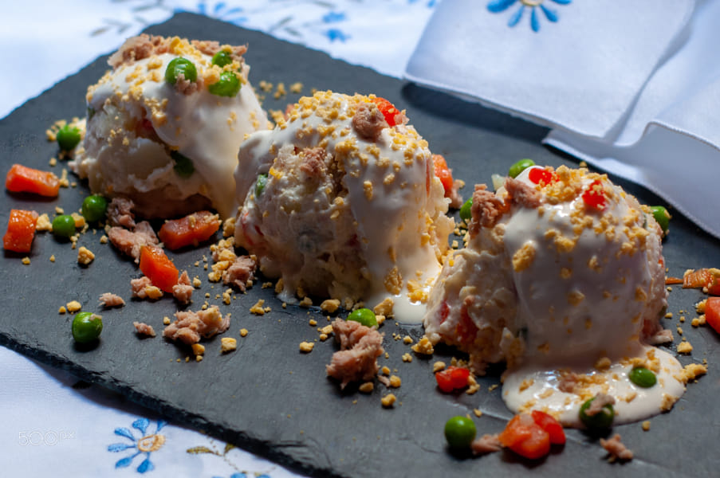
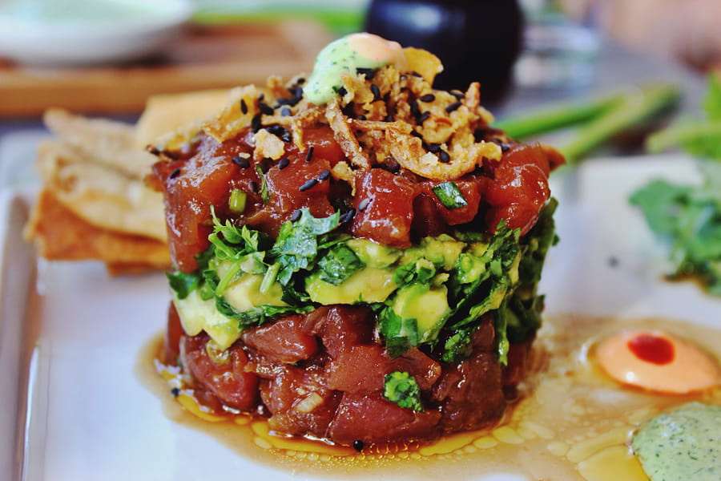

Entrantes
Ensaladilla
- 2-3 patatas (450 g)
- 2 huevos
- 3 cucharadas de guisantes en conserva
- 2/4 de mayonesa casera
- perejil
- 4 zanahorias
- 2 latas de atún
- 1 lata de pimieto rojo
- sal
Tartar
- 300 gr de atún rojo
- 2 aguacates
- 1/2 cebolleta
- 1/2 lima
- 3 cucharadas soperas de salsa de soja
- 1 cucharada sopera de aceite de sésamo
- 1 cucharadita pequeña de wasabi
- 1/2 cuchara de postre de jengibre
- Aceite de oliva virgen extra y sal
- Semillas de sésamo